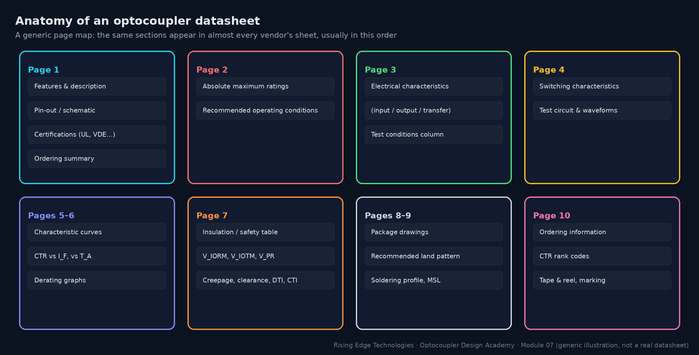
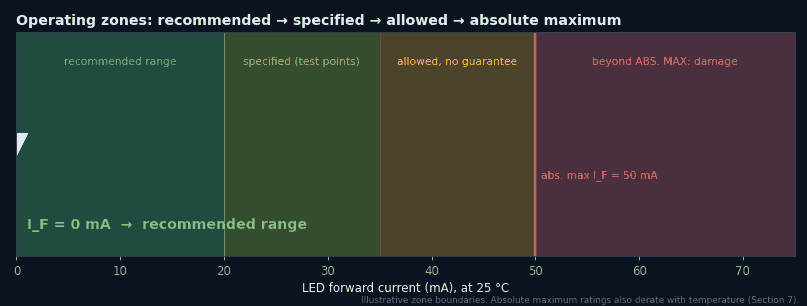
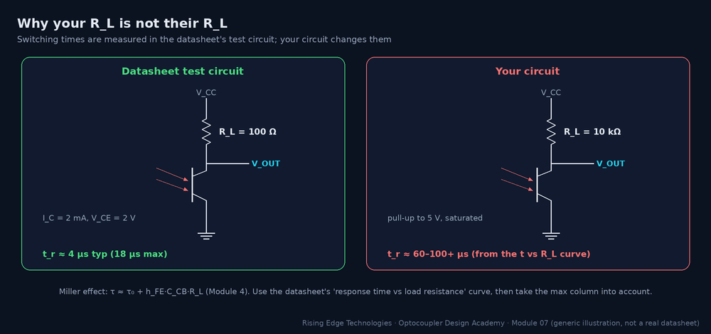
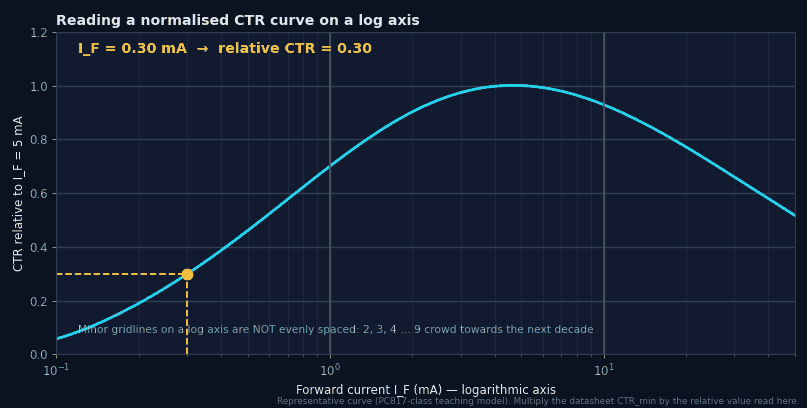
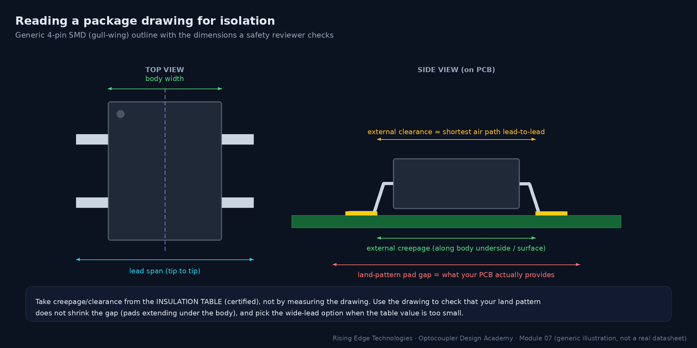

Reading the Datasheet
A line-by-line dissection of real optocoupler datasheets: absolute maximum ratings and what actually happens beyond them, electrical characteristic tables and test conditions, CTR and derating curves, safety certification tables, and package drawings with creepage callouts.
Illustrations and animations are original teaching drawings, not to scale. Values marked representative are typical of common parts; always confirm against the current datasheet or standard you design to.
Datasheets are dense but predictable. Once you know the map, you can find any number in seconds and, more importantly, you can find the conditions attached to it.

“Absolute maximum” means exactly that: the stress beyond which the manufacturer no longer guarantees the part will survive. Nothing in the electrical-characteristics table is guaranteed there, and life shortens as you approach them. They are not design targets.
| Rating | What physically fails beyond it |
|---|---|
| IF, IFM | LED junction overheating and current crowding; accelerated light-output degradation; bond-wire fusing at high pulses |
| VR | LED reverse breakdown: localised heating damages the junction permanently |
| VCEO | Collector–emitter avalanche breakdown; with energy (inductive loads), destruction |
| VECO | Emitter–base junction breakdown at a few volts; degrades hFE |
| Ptot, PC | Junction temperature beyond limits; encapsulant stress |
| VISO | Barrier breakdown or partial-discharge damage (test rating, not working) |
| Tstg, Topr, soldering | Encapsulant cracking, delamination, wire-bond fatigue, optical yellowing |

Some datasheets (always for logic and gate-driver parts) include a recommended operating conditions table: the range over which the electrical characteristics apply. Typical entries: supply voltage (e.g. 4.5–5.5 V), IF(on) (e.g. 6.5–15 mA for a 6N137-class part), IF(off) or VF(off) (the input must be truly off, e.g. ≤ 250 µA or ≤ 0.8 V), and ambient temperature.
The electrical characteristics table has three value columns and one conditions column. The golden rule: design with the min or max that hurts you, at conditions corrected to yours. The typical column describes the median part. Roughly half of your production will be worse.
| If you are calculating… | Use | Because |
|---|---|---|
| Minimum output current | CTRmin × corrections | Every part is guaranteed to exceed it |
| LED resistor for minimum current | VF(max) | Highest VF gives the lowest IF |
| LED current maximum (stress) | VF(min) or a hot, low VF | Lowest VF gives the highest IF |
| Leakage in the off state | ICEO(max), at your hottest temperature | Leakage doubles about every 10 °C |
| Speed | tr/tf max, converted to your RL | Test circuit is not your circuit |
Switching times are only meaningful together with their test circuit. Phototransistor datasheets typically measure with RL = 100 Ω at IC = 2 mA in the active region. That is great for a fast number and unlike almost any real logic interface.

Worked example — translating tr
Datasheet: tr = 4 µs typ, 18 µs max at RL = 100 Ω. Your pull-up: 10 kΩ.- The response-vs-RL curve (typical) shows roughly 60–100 µs at 10 kΩ.
- Scale by max/typ (18/4 ≈ 4.5) for a pessimistic bound: several hundred µs is possible for a worst-case part.
- For a 1 kHz signal (500 µs half-period) that is marginal, so reduce RL or choose a faster family (Module 5).
Curves are typical unless labelled otherwise. They tell you the shape of a dependency, which you apply as a ratio to a guaranteed number. Four curves matter most: CTR vs IF (often normalised to 1 at 5 mA), CTR vs TA, output current vs VCE, and response time vs RL. Some vendors also publish long-term CTR degradation curves; Module 9 uses them.
Reading log axes correctly
Most current axes are logarithmic. Each decade (0.1–1–10 mA) has the same width, and the minor gridlines for 2, 3 … 9 get closer together towards the next decade. A point one-third of the way through a decade is ≈ 2, not 3.3. Interpolate logarithmically: x = 10(log x1 + f·(log x2 − log x1)).

Derating graphs show the maximum allowed IF, collector power and total power vs ambient temperature. They are usually flat to 25 °C (sometimes higher) and then fall linearly to zero at the maximum temperature. Read them at your worst-case ambient inside the enclosure, next to whatever heats the board, not at the room temperature on the specification sheet.
Worked example
Ptot 200 mW at 25 °C, zero at 110 °C (fictional RX-817). Enclosure ambient 80 °C.- Slope = 200 / (110 − 25) ≈ 2.35 mW/°C.
- Allowed at 80 °C: 200 − 2.35 × 55 ≈ 71 mW, just over a third of the headline figure.
The insulation (safety) table is the part of the datasheet a certification engineer reads. It is backed by the component certificates: UL 1577 (file number on page 1), VDE/IEC 60747-5-5 (certificate number), sometimes CQC or CSA. Key entries and how to use them:
| Entry | What to check |
|---|---|
| Installation class / OVC per mains voltage | Which overvoltage categories the part is rated for, at which rated mains voltage |
| Climatic category (e.g. 55/110/21) | Min temp / max temp / damp-heat days of the test |
| Pollution degree | The PD the internal and package ratings assume (usually PD2) |
| VIORM, VIOTM, VIOSM, VPR | Against working, transient and surge voltages (Module 6) |
| Creepage, clearance (external) | Against the end-product requirement; wide-lead options often exist |
| DTI | Many standards require ≥ 0.4 mm for supplementary/reinforced solid insulation |
| CTI / material group | Sets the creepage requirement for the package surface |
| Safety-limiting values (IS, PS, TS) | The maximum input current/power and temperature under fault conditions for which insulation is still guaranteed |
Package drawings give dimensions with tolerances, the recommended land pattern and sometimes explicit creepage/clearance callouts. Use them to make sure your footprint does not quietly reduce the certified distances, and to choose between lead-form options.

The ordering section turns one datasheet into dozens of real part numbers: CTR rank letters, lead-form options (DIP, gull-wing SMD, wide-lead), tape-and-reel, and certification options (e.g. a suffix for VDE-tested parts). Each option can change guaranteed values.
| Code element | Example meaning (fictional RX-817) | Why it matters |
|---|---|---|
| Rank letter A/B/C/D | CTR 80–160 / 130–260 / 200–400 / 300–600 % | Only a ranked part number guarantees the narrower window |
| “W” wide lead | 10.16 mm lead span, ≥ 8 mm creepage | Needed for reinforced 230 V at PD3, medical, etc. |
| “S” SMD | Gull-wing leads for reflow | DIP versions are often not reflow-rated |
| “V” / “-000E” etc. | VDE-certified, RoHS or lead-finish variants | The VIORM claim may apply only to this option |
Two datasheets, two mindsets. A phototransistor sheet is organised around CTR; a logic-output sheet around thresholds and timing. Here is what to look at first in each (generic, not vendor-specific):
| Look for… | PC817-class phototransistor | 6N137-class logic output |
|---|---|---|
| Transfer spec | CTR min/max by rank at IF = 5 mA, VCE = 5 V | IFH/IFL threshold (e.g. ≤ 5 mA); recommended IF(on) |
| Output | VCEO, IC, VCE(sat) at a test point | VOL at IOL, IOH leakage, pull-up range |
| Supply | None (pull-up only) | VCC range, ICC, mandatory 0.1 µF bypass |
| Timing | tr/tf at RL = 100 Ω; response vs RL curve | tPHL/tPLH, PWD, skew, data rate |
| Immunity | Often no CMTI spec | CMH/CML in kV/µs |
| Extras | CTR rank letters | Enable pin, output type (OC vs totem-pole) |
| Curves | CTR vs IF/TA, derating | tP vs IF/TA, VOL vs IOL |
Know the map
Features → abs max → electrical → switching → curves → insulation → package → ordering.
Abs max is not a design point
Stay in the recommended range; derate absolute limits with temperature.
Min/max, with conditions
Use the limiting column and translate its test conditions to yours.
Test circuits differ
Convert tr/tf to your RL with the response curve.
Curves are typical ratios
Read shapes on log axes carefully; apply them to guaranteed numbers.
The insulation table certifies
VIORM, creepage, DTI, CTI, PD test: compare with the end-product standard.
The drawing protects the gap
Check land patterns do not erode certified distances.
The ordering code is the product
Rank, lead form and certification option must be in the BOM.
Design checklist
Tick items as you review a design. Your ticks are saved in this browser only; use your browser’s print function for a sign-off copy.
Four parts: multiple choice, true/false, a matching exercise and engineering scenarios. Score 80 % on the multiple choice to pass the module.